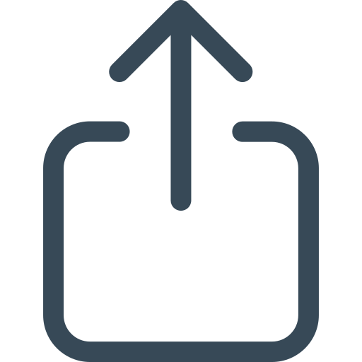

Фоторедактор
Выберете файл (допустимые форматы .jpeg и .png):
Открыть файл
Введите ширину картинки:
Введите высоту картинки:
Выберете фильтр:
Перевод в черно-белое
Отразить по вертикали
Отразить по горизонтали
Повернуть на 90 градусов влево
Повернуть на 90 градусов вправо
Бинаризация по порогу
Удалить фильтр
Добавить фильтр
Отправить
Результат редактирования
Исходное изображение:
Отредактированное изображение:
Скачать